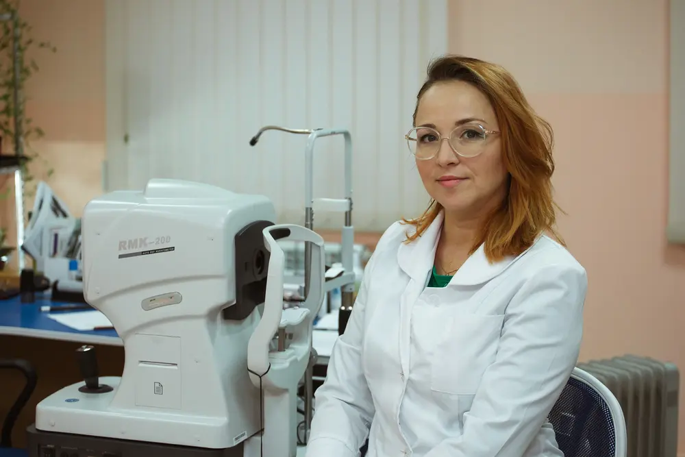

Офтальмолог в городе Боровичи
Центр
Зрения
Лучшее для ваших глаз
Наши специалисты
Врач-офтальмолог
Ханнанова Анна Николаевна
Образование
- 2010 год - окончила Санкт-Петербургскую Государственную Педиатрическую Медицинскую Академию по специальности "Педиатрия"
- 2012 год - ординатура по специальности "Общая офтальмология"
- 2013 год - школа контактной коррекции "Johnson & Johnson Vision"
- 2022 год - курс "Узи-диагностика органа зрения"
- 2022 год - Глаукомная школа
- 2023 год - школа контактной коррекции "OKvision"
- 2024 год - курс "Оптическая когерентная томография глаза"
- 2024 год - школа миопии
- Регулярное повышение квалификации в области офтальмологии
Опыт работы
- Городская Мариинская больница (Санкт-Петербург)
- Сеть салонов оптики "Зайди-увидишь" (Санкт-Петербург)
- Поликлиники (Выборг)
- Поликлиника (Боровичи)
Оборудование
Проектор знаков
Авторефрактометр
Щелевая лампа
Icare
УЗИ
Диоптриметр
Услуги и цены
Услуга
Цена
Консультация офтальмолога (сбор жалоб, анамнез, рекомендации)
1 000 руб.
Первичный прием взрослого населения (сбор анамнеза, визометрия, авторефрактометрия, офтальмоскопия, тонометрия, характер зрения, проба Норна, проба Ширмера, подбор коррекции, рекомендации)
1500 руб.
Первичный прием детского населения (сбор анамнеза, визометрия, авторефрактометрия, скиаскопия, офтальмоскопия, тонометрия, определение угла косоглазия, характер зрения, подбор коррекции, рекомендации)
1300 руб.
Повторный прием (в течении 1 месяца от первичного осмотра)
1000 руб.
Подбор очковой коррекции любой сложности
1000 руб.
Подбор мягких контактных линз (МКЛ)
1000 руб.
Офтальмоскопия (+авторефрактометрия)
1000 руб.
Тонометрия (тонометр Icare или тонометр по Маклакову)
350 руб.
Удаление инородного тела с конъюктивы и/или роговицы
1 000 руб.
Введение Кеналога в полость халязиона
1 000 руб.
Инъекции (парабульбарная, субконъюктивальная)
200 руб.
Узи глазного яблока:
А-сканированиe (ультразвуковая биометрия глаза) - 2 глаза
1 000 руб.
В-сканирование (ультразвуковое исследование глазного яблока) - 2 глаза
800 руб.
Отзывы
Контакты
Как нас найти
г. Боровичи, ул. 9 января, 15
(напротив дома молодежи, вход в арку)
Часы работы
- Пн: 10:00 - 17:00
- Вт: 10:00 - 17:00
- Ср: 10:00 - 17:00
- Чт: 10:00 - 17:00
- Пт: 10:00 - 17:00
- Сб: ВЫХОДНОЙ
- Вс: ВЫХОДНОЙ